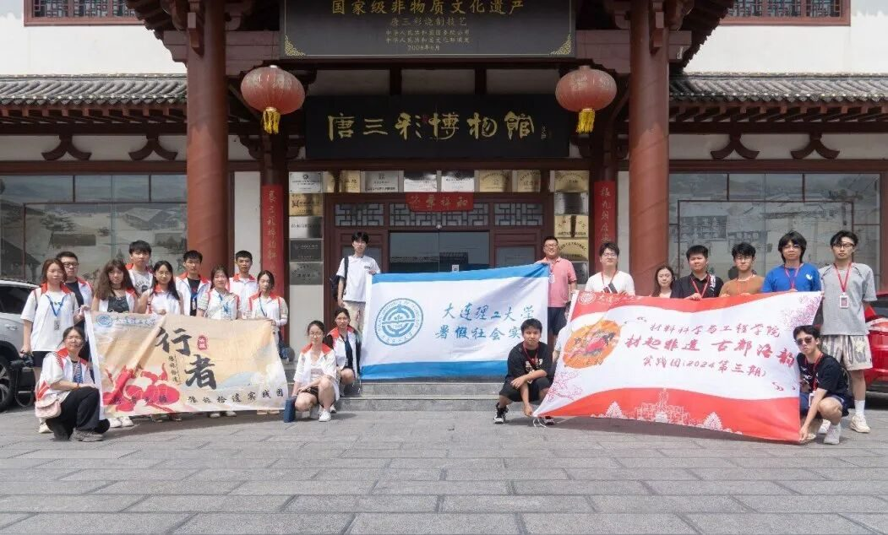
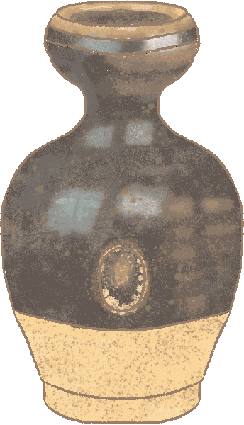
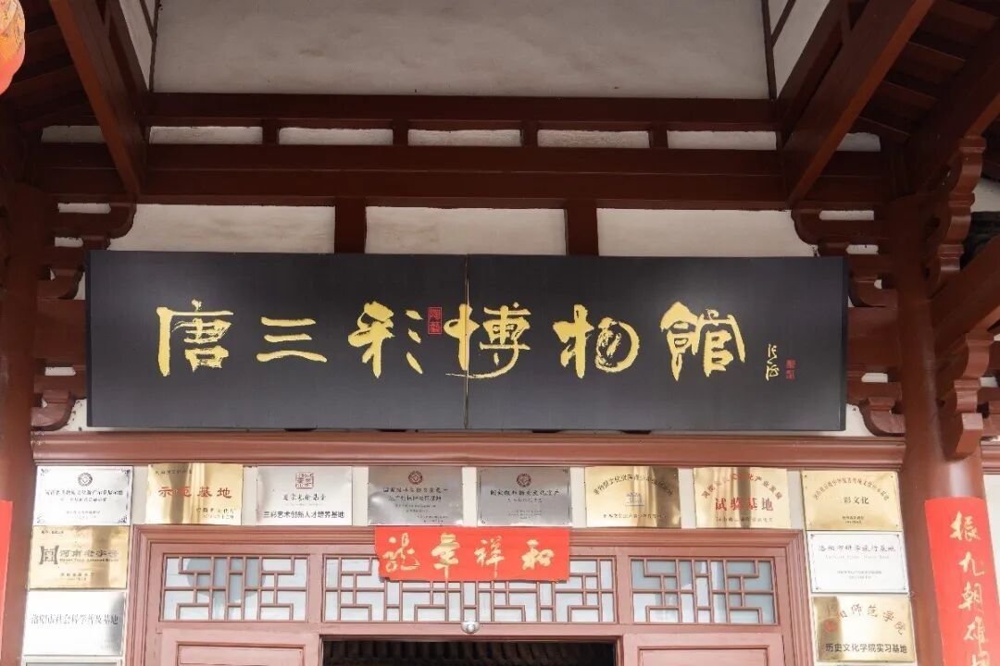

【行者无疆·豫旅拾遗】唐彩流光映古韵， 匠心独运话千年

文物荟萃，瑰宝盈室—洛阳唐三彩博物馆
唐三彩，以三彩釉色，绘盛世唐风，似天边彩霞，熠熠生辉；如历史长河，流淌华章。每一器物，凝聚时光精华，见证岁月沧桑，承载匠心独运，智慧永恒。

唐三彩博物馆

唐三彩
上午，行者们踏入了洛阳唐三彩博物馆，仿佛穿越时空，触摸到了盛唐的脉搏。讲解员的声音如泉水般清澈，引领我们走进了唐三彩的世界。她娓娓道来，讲述了唐三彩的辉煌历史，它诞生于唐代，以独特的黄、绿、白三色釉闻名于世，是那个时代艺术与文化的结晶。
寻文化之根
上下滑动查看更多
讲解员详细介绍了唐三彩的特点：釉色绚丽多彩，造型生动逼真，工艺精湛绝伦。每一件作品都仿佛诉说着一个故事，让人陶醉于那个繁华的年代。而在制作工序上，唐三彩展现了古人智慧与技艺的融合。从选料、制坯、晾晒，到上釉、烧制，每一步都凝聚了工匠们的心血与汗水。
上下滑动查看更多
简单的介绍过后，行者们亲手为陶坯上釉，小心翼翼地蘸取橙、绿、白三色，细腻地涂抹在器物表面。每一笔都充满敬畏，仿佛与千年前的工匠对话，感受着色彩与历史的交融，体验了一次穿越时空的艺术之旅。
上下滑动查看更多
在上色的过程中，行者们有幸邂逅了来自大连理工大学材料科学与工程学院的“材起非遗，古都洛韵”实践团。两支队伍在交流中携手，在合作中共鸣，共同绘制了一幅协作共赢的和谐画卷。
上下滑动查看更多
在这片古老而充满活力的土地上，我们的“行者无疆·豫旅拾遗”暑期社会实践之旅画上了圆满的句点。行者的脚步虽停，但无疆的精神永存；思者的心灵虽静，但无域的探索不止。在传承和发扬非遗文化的征途上，我们的小行者们肩负重任，矢志不渝。他们将以满腔热血和坚定的信念，继往开来，在非遗文化的广阔天地中，挥洒青春汗水，播撒智慧种子！
来源 | 行者无疆·豫旅拾遗实践团
图片 | 行者无疆·豫旅拾遗实践团
文字 | 李凌志
排版 | 杩健辉
审核 | 范伊诺 张家铭